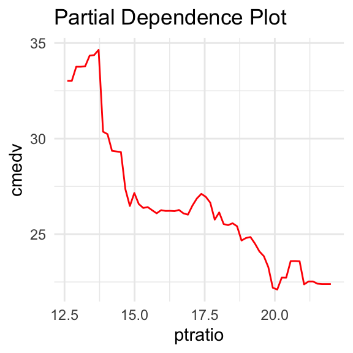
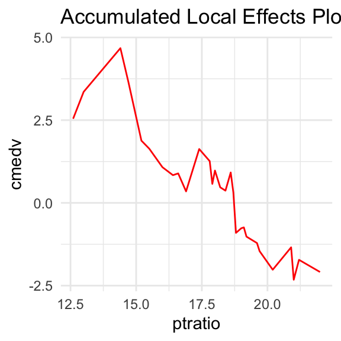
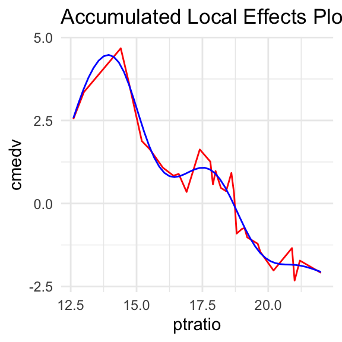
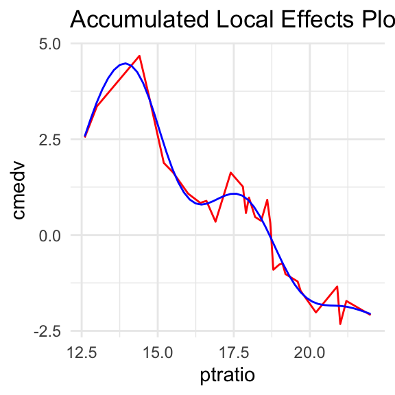

xspliner package - basic theory and usage
Krystian Igras
2018-12-03
xspliner.RmdMotivation
In regression or classification problem, the main issue is choosing the model that should meet our requirements as much as possible. On the one hand, we want the chosen solution to have the best statistical properties such as accuracy, SSE or R Squared - on the other hand, we focus on the interpretability of the model.
In the first case, black box models, such as randomForest or XGBoost, perform better than others, while the second case is dominated by linear models. The xspliner package aims to combine both methods: use the knowledge gathered from black box models in order to build an interpretable linear one.
General idea
Below graphics show general idea used in xspliner model (todo)
Black box variable response
When black box model is already built, you may want to check how each predictor variable affects the final response. This is quite easy when you use a linear model or have low dimensional data (up to 2, 3 dimensions). One of ideas for testing the predictor impact in more complicated model is to check an average model response of the selected variable.
One of such approaches called Partial Dependence Plots is implemented in the pdp package (Brandon M. Greenwell (2017). Pdp: The R Journal, 9 (1), 421-436.), or the ALEPlot package (Dan Apley (2017). ALEPlot: Accumulated Local Effects Plots and Partial Dependence Plots.) using Accumulated Local Effects Plots.
In each case, we get a single variable function, which should explain the impact of the predictor on the response variable.
The following pictures show the ptration impact on cmedv in some randomForest model based on Boston Housing Data. Below curves are obtained by the approach of the pdp and ale methods.

As we can see, above functions are irregular, making it difficult to interpret explained effect.
If above functions had linear character, one would be tempted to approximate them with linear function. As a result one could easily interpret how it affects the variable explained in the black box model. What if the function is irregular, as above?
Splines
Due to the large errors that occurs with approximation of functions with polynomials, the approach using spline approximation is most common solution. Splines (functions that piecewise polynomials) have good approximating properties, in addition their form is overt so we can thus interpret the resulting function.
The following graphics show spline approximations of pdp and ale curves:
 

Linear models based on response function and splines
The general idea of how to use the response function and splines to build an interpretable model is as follows.
- For each variable used in the black box model, create a response function based on one of the known methods, let’s mark it \(f_{x}\)
- Approximate \(f_{x}\) using spline - the result is \(\widetilde{f}_{x}\)
- Build linear model, in which each predictior \(x_{i}\) is transformed with approximated response function: \(\widetilde{f}_{x_{i}}(x_{i})\)
Shortly, using black box formula \[y \sim x_{1} + \cdots + x_{n}\] we use \[y \sim \widetilde{f}_{x_{1}}(x_{1}) + \cdots + \widetilde{f}_{x_{n}}(x_{n})\] in linear one.
The resulting model uses part of the information that was extracted while building black box model.
How to do it with xspliner?
Defining formula
This sections shows, how to build formula interpretable by xspliner package using Boston Housing Data from pdp package.
Read the data
data(boston)
str(boston)
#> 'data.frame': 506 obs. of 16 variables:
#> $ lon : num -71 -71 -70.9 -70.9 -70.9 ...
#> $ lat : num 42.3 42.3 42.3 42.3 42.3 ...
#> $ cmedv : num 24 21.6 34.7 33.4 36.2 28.7 22.9 22.1 16.5 18.9 ...
#> $ crim : num 0.00632 0.02731 0.02729 0.03237 0.06905 ...
#> $ zn : num 18 0 0 0 0 0 12.5 12.5 12.5 12.5 ...
#> $ indus : num 2.31 7.07 7.07 2.18 2.18 2.18 7.87 7.87 7.87 7.87 ...
#> $ chas : Factor w/ 2 levels "0","1": 1 1 1 1 1 1 1 1 1 1 ...
#> $ nox : num 0.538 0.469 0.469 0.458 0.458 0.458 0.524 0.524 0.524 0.524 ...
#> $ rm : num 6.58 6.42 7.18 7 7.15 ...
#> $ age : num 65.2 78.9 61.1 45.8 54.2 58.7 66.6 96.1 100 85.9 ...
#> $ dis : num 4.09 4.97 4.97 6.06 6.06 ...
#> $ rad : int 1 2 2 3 3 3 5 5 5 5 ...
#> $ tax : int 296 242 242 222 222 222 311 311 311 311 ...
#> $ ptratio: num 15.3 17.8 17.8 18.7 18.7 18.7 15.2 15.2 15.2 15.2 ...
#> $ b : num 397 397 393 395 397 ...
#> $ lstat : num 4.98 9.14 4.03 2.94 5.33 ...We’re going to prepare formula
cmedv ~ rm + lstat + noxSpecify which variables should be transformed. In this example we will transform nox variable.
To indicate transformation use xs(nos) symbol.
So we have:
cmedv ~ rm + lstat + xs(nox)As the algoritm goes threw creating response function and its approximation we need to specify desirable parameters.
Specifying which method should we use to build response function
effect = list(
type = <method_type> # "pdp" or "ale",
... # named list - other parameters passed for chosen method
)Possible parameters that can be passed into ... find in
-
pdp::partialin case oftype = "pdp" -
ALEPlot::ALEPlotin case oftype = "ale"
Specifying spline approximation parameters
Response function is approximated with mgcv::gam package and mgcv::s smoothing function.
xspliner allows using all smoothing methods provided by mgcv::s. You can pass corresponding parameters in
transition = <mgcv::s parameters> # named listRemark One of special parameters passed for transition is increasing. When the parameter occurs then:
- for
TRUEvalue, approximation will be increasing - for
FALSEvalue, approximation will be decreasing
Let’s assume we want to build response function basing on “pdp” package. Response function is presented as data.frame with two columns (in our case):
-
nox- \(n\) evenly spaced points across range ofnoxvariable. Specified bygrid.resolutionparameter (51 by default) -
yhat- response function values on points specified in the first column
As we want to store 100 values for response function data, we specify in formula:
cmedv ~ rm + lstat + xs(nox, effect = list(type = "pdp", grid.resolution = 100))We also want to approximate response function with cubic splines and basis dimension equal to 10. As we can see in mgcv::s documentation, we need to set: k = 10 and bs = "cr".
So we get the final formula:
cmedv ~ rm + lstat + xs(nox,
effect = list(type = "pdp", grid.resolution = 100),
transition = list(k = 10, bs = "cr"))Building the model
Having the formula defined, we almost have all the required data provided. The only one left, that the approach requires is the black box model that is the basis of our resulting model.
Let’s define randomForest for this purpose.
As we already have the black box provided, we can use xspline function to build the desired model.
xp_model <- xspline(
cmedv ~ rm + lstat +
xs(nox,
effect = list(type = "pdp", grid.resolution = 100),
transition = list(k = 10, bs = "cr")),
model = boston_rf
)
#> Cannot extract model family. Use gaussian.
#> Cannot extract model link. Use identity.Lets check the model summary:
summary(xp_model)
#>
#> Call:
#> glm(formula = cmedv ~ rm + lstat + xs(nox), family = family,
#> data = data)
#>
#> Deviance Residuals:
#> Min 1Q Median 3Q Max
#> -13.3754 -3.3141 -0.9339 2.0499 27.1722
#>
#> Coefficients:
#> Estimate Std. Error t value Pr(>|t|)
#> (Intercept) -32.40688 4.84433 -6.690 5.98e-11 ***
#> rm 5.26616 0.41581 12.665 < 2e-16 ***
#> lstat -0.51954 0.04371 -11.886 < 2e-16 ***
#> xs(nox) 1.22869 0.15052 8.163 2.66e-15 ***
#> ---
#> Signif. codes: 0 '***' 0.001 '**' 0.01 '*' 0.05 '.' 0.1 ' ' 1
#>
#> (Dispersion parameter for gaussian family taken to be 26.77072)
#>
#> Null deviance: 42578 on 505 degrees of freedom
#> Residual deviance: 13439 on 502 degrees of freedom
#> AIC: 3105.3
#>
#> Number of Fisher Scoring iterations: 2As you can see in the summary, the final formula is simplified version of input one. All the information about the response functions are stored in xp_model environment.
Plotting the result
(in progress)
You may plot simple graphics for resulting model with xp_plot function.


Is spline transformation always better?
For qualitative variables only
When the response function has linear form, approximating it with splines may make the result worse. xspline function offers automatical check if spline approximation is better than linear one, and use it in final model.
You may find two parameters responsible for that: - alter - The list of ‘numeric’ and ‘factor’. When alter$numeric == 'auto', automatically choose whther variable should be transformed with splines - compare_stat - function of lm class object. Defines statistic that should be used in decision between spline model and linear one. The function should have attribute higher. When the attribute has "better" value then the model with higher statistic value is chosen.
You can see the feature in above example:
set.seed(123)
boston_rf <- randomForest(cmedv ~ lstat + ptratio + age, data = boston)
model_pdp_auto <- xspline(
cmedv ~
xs(lstat, transition = list(k = 6), effect = list(type = "pdp", grid.resolution = 60)) +
xs(ptratio, transition = list(k = 4), effect = list(type = "pdp", grid.resolution = 40)) +
age,
model = boston_rf,
xs_opts = list(transition = list(alter = "auto"))
)
# r_squared statistic is used by default
summary(model_pdp_auto)
#>
#> Call:
#> glm(formula = cmedv ~ xs(lstat) + ptratio + age, family = family,
#> data = data)
#>
#> Deviance Residuals:
#> Min 1Q Median 3Q Max
#> -12.7619 -3.2031 -0.6366 2.8787 26.9953
#>
#> Coefficients:
#> Estimate Std. Error t value Pr(>|t|)
#> (Intercept) 4.638819 2.952287 1.571 0.117
#> xs(lstat) 1.248040 0.048545 25.709 < 2e-16 ***
#> ptratio -0.858557 0.113027 -7.596 1.51e-13 ***
#> age 0.054359 0.009827 5.532 5.11e-08 ***
#> ---
#> Signif. codes: 0 '***' 0.001 '**' 0.01 '*' 0.05 '.' 0.1 ' ' 1
#>
#> (Dispersion parameter for gaussian family taken to be 24.87722)
#>
#> Null deviance: 42578 on 505 degrees of freedom
#> Residual deviance: 12488 on 502 degrees of freedom
#> AIC: 3068.2
#>
#> Number of Fisher Scoring iterations: 2Linear approximation was better for ptratio response function.
Further work
See github issues